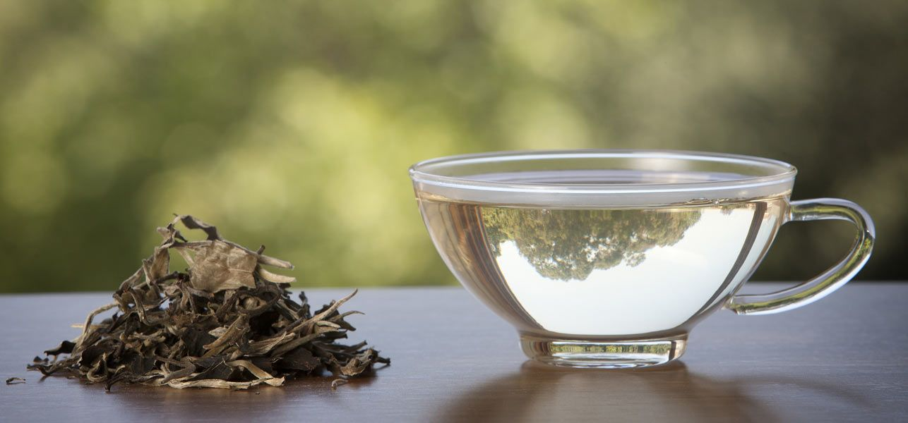
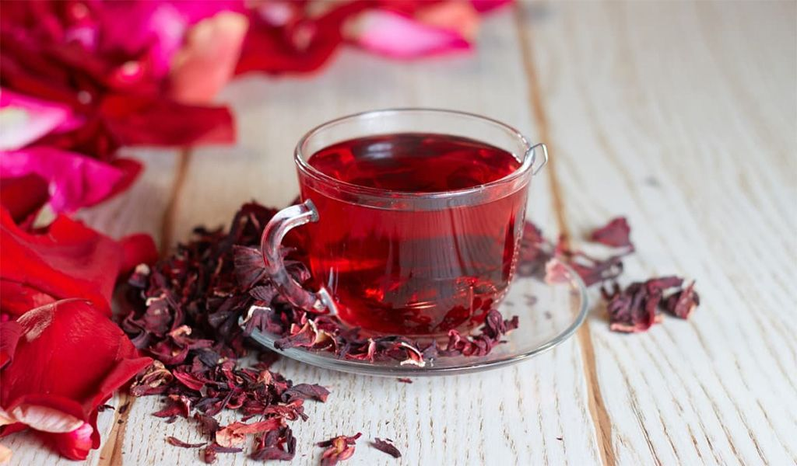
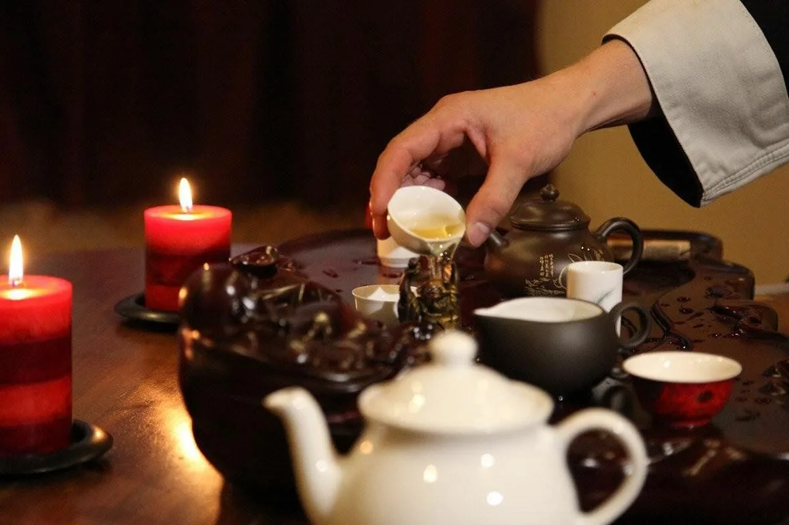
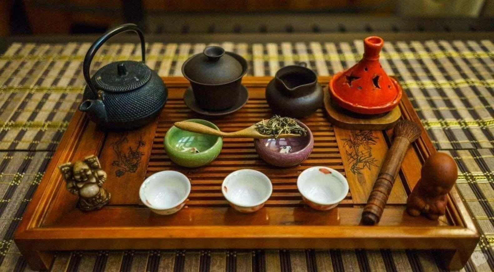

Добро пожаловать!
Привет! Меня зовут Кирилл, и я увлекаюсь чаем уже два года. За это время я познакомился с самыми разными вкусами и ароматами, которые могут предложить чайные листья. Мой путь в мир чая начался с простого интереса, но вскоре превратился в настоящую страсть.
На этом блоге я делюсь своими открытиями и впечатлениями от различных сортов чая. Здесь вы найдете обзоры, советы по завариванию, а также истории о моих чайных путешествиях. Я стремлюсь к тому, чтобы каждый мог найти для себя что-то новое и интересное в мире чая.
Присоединяйтесь ко мне в этом увлекательном путешествии, и давайте вместе откроем для себя все грани этого удивительного напитка!
Мой чайный путь
Мой интерес к чаю начался с простого любопытства. Я всегда любил пробовать новые напитки, и однажды решил попробовать настоящий китайский чай. С тех пор я не мог остановиться. Я начал изучать различные сорта чая, их происхождение и способы заваривания.
Со временем я начал делиться своим опытом с друзьями и семьей. Я устраивал чайные церемонии, рассказывал о различных сортах чая и их особенностях. Мои близкие начали интересоваться чаем, и это вдохновило меня на создание этого блога.
Теперь я делюсь своими знаниями и опытом с вами, дорогие читатели. Надеюсь, что мой блог поможет вам открыть для себя удивительный мир чая и насладиться этим прекрасным напитком так же, как наслаждаюсь им я.
Мои любимые сорта чая
Среди множества сортов чая, которые я пробовал, у меня есть несколько любимых. Один из них - белый чай. Белый чай отличается своим нежным вкусом и ароматом, он обладает легкостью и свежестью, которые я очень ценю.
Еще один мой фаворит - ГАБА чай. Этот чай богат аминокислотами и имеет уникальный вкус, который невозможно спутать ни с чем другим. ГАБА чай помогает расслабиться и снять стресс, что делает его идеальным напитком для вечернего чаепития.
И, конечно же, шен пуэр. Этот чай обладает насыщенным вкусом и ароматом, который развивается с годами. Шен пуэр - это чай для настоящих ценителей, он требует времени и терпения, но награждает за это неповторимыми вкусовыми ощущениями.
